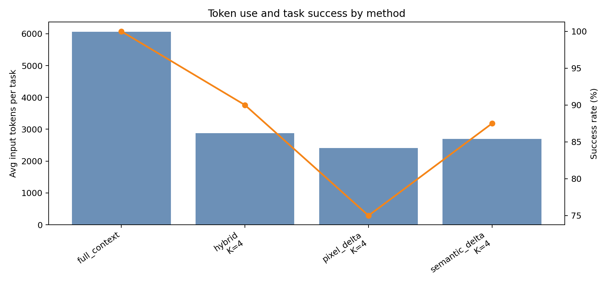
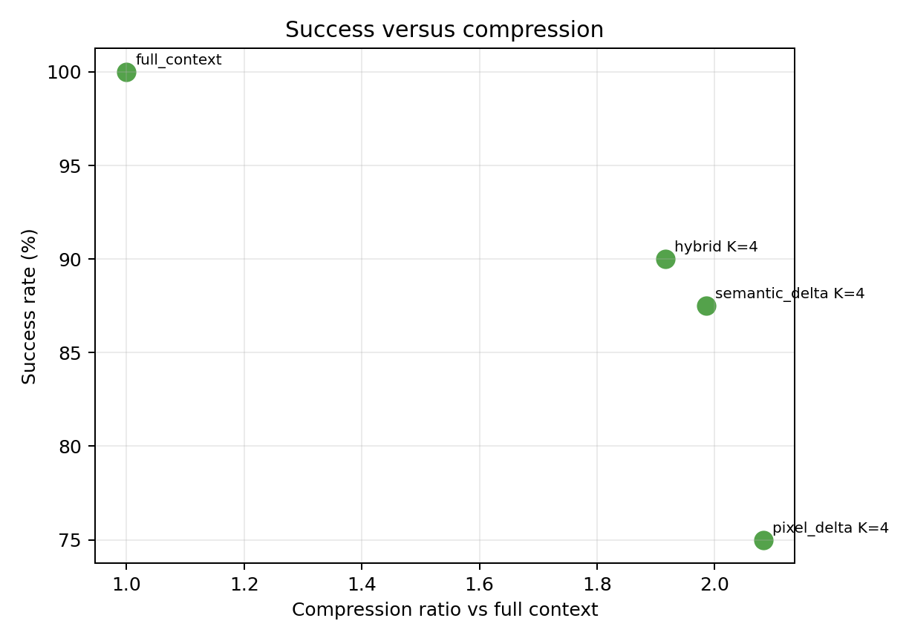
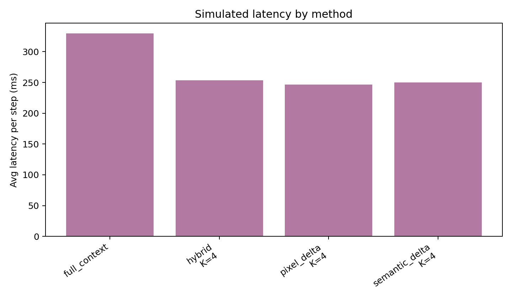
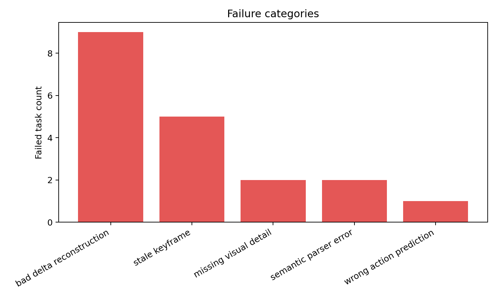

52.5%
input-token reduction for hybrid K=4 versus full context
1.92x
compression ratio on the default 40-task benchmark
90.0%
hybrid success rate under deterministic simulated policy
253 ms
average simulated latency per step for hybrid K=4
Core Idea
GUI trajectories are temporally redundant. Instead of sending a complete screenshot, DOM tree, accessibility tree, OCR text, and full history at every step, the agent can use a previous keyframe plus compact deltas.
GUI(t) = Keyframe(t-k) + DeltaUI(t-k+1 ... t)
Default Results
| Method | Success | Avg input tokens | Latency/step | Compression |
|---|---|---|---|---|
| Full context | 100.0% | 6061.8 | 329.7 ms | 1.00x |
| Hybrid K=4 | 90.0% | 2877.2 | 253.5 ms | 1.92x |
| Pixel delta K=4 | 75.0% | 2411.6 | 246.8 ms | 2.08x |
| Semantic delta K=4 | 87.5% | 2699.9 | 249.8 ms | 1.99x |
Figures




Citation
@misc{tom2026guistatecompression,
title = {GUI State Compression for Computer-Use Agents Using Keyframes and Delta Encoding},
author = {Tomar, Saurav},
year = {2026},
url = {https://github.com/sauravtom/gui-state-compression},
note = {Workshop prototype preprint and code release}
}